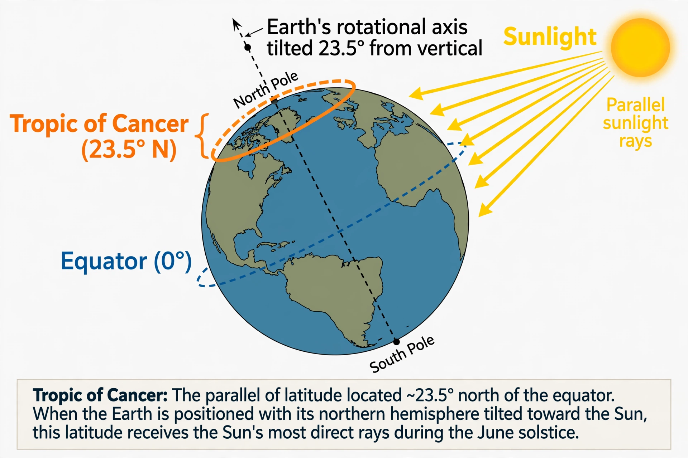

Wikipedia — the free encyclopedia
| Latitude | ≈ 23.44° N (23°26′ N) |
| Type | Circle of latitude (tropic) |
| Event | Sun directly overhead at the June solstice |
| Counterpart | Tropic of Capricorn |

The Tropic of Cancer: the northernmost latitude at which the Sun can appear directly overhead.
The Tropic of Cancer is the northernmost circle of latitude on Earth at which the Sun can be directly overhead. This occurs once a year, at the moment of the June solstice, when the Northern Hemisphere is tilted most fully towards the Sun. It currently lies at about 23.44° north of the Equator.
Its southern counterpart is the Tropic of Capricorn. The band of Earth between the two tropics — the tropics proper — is the only part of the planet where the Sun can ever stand at the zenith.
The tropic takes its name from the constellation Cancer. When the line was named, over two thousand years ago, the Sun appeared against the stars of Cancer at the June solstice. Because of the slow wobble of Earth's axis known as precession, the June-solstice Sun now appears in the constellation Gemini, close to the border with Taurus — but the traditional name has been kept.
The word tropic comes from the Greek tropikos, meaning a turn: at the solstice the Sun's northward march halts and turns back south.
Travelling westward from the prime meridian, the Tropic of Cancer passes through Algeria, Niger, Libya, Egypt, the Red Sea, Saudi Arabia, the United Arab Emirates, Oman, the Arabian Sea, India, Bangladesh, Myanmar, China, Taiwan, the Pacific Ocean, Hawaii, Mexico, the Bahamas and the Atlantic Ocean.
Because Earth's axial tilt slowly changes, the tropic is drifting southward by roughly 15 metres per year; its latitude is conventionally quoted as 23°26′ N, rounded from its present value.